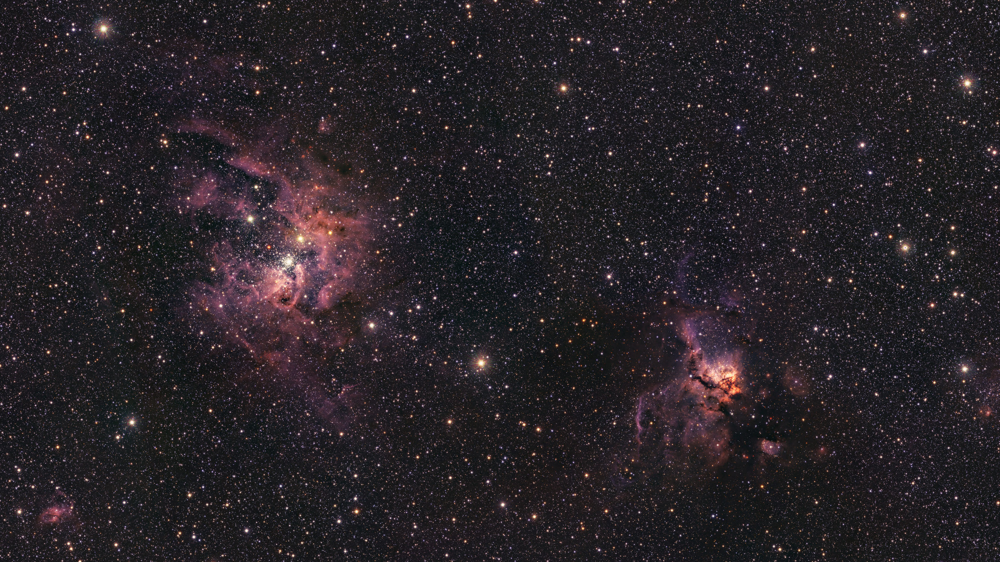
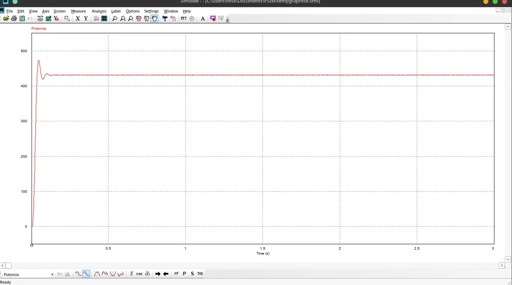
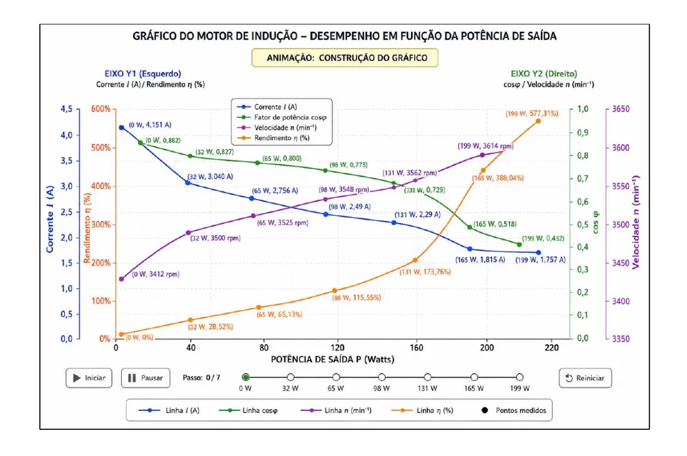

01
t = τ
Uma constante de tempo: ~63,2%
Em t = τ, o capacitor atinge cerca de 63,2% de Vs, porque 1 − e−1 ≈ 0,632.

Engenharia Elétrica e Física · gratuito
Engenharia Elétrica e Física explicadas por uma estudante: resumos, equações resolvidas e simulações de aulas de laboratório reais.
Foto: ESO (CC BY 4.0)
Sobre
Sou a Nina, estudante de Engenharia Elétrica no IFMT. Aqui transformo meus relatórios de laboratório e estudos em resumos diretos, com as equações e simulações que eu mesma fiz.
Circuitos elétricos Métodos numéricos em Python LaTeX Arduino Astrofísica
Trilha de estudo
Cada módulo traz a teoria física e matemática, um laboratório interativo, flash cards e um quiz de autoestudo. Siga a ordem ou pule direto para o assunto da sua prova.
Módulo 1 · Fundamentos de circuitos
Antes de capacitores e motores, quatro grandezas e três leis. Com elas dá para analisar praticamente todo circuito resistivo.
A carga elétrica é uma propriedade da matéria: o elétron carrega −1,602 × 10⁻¹⁹ C e o próton a mesma quantidade, positiva. Num fio metálico, os elétrons livres vagueiam ao acaso; quando aplicamos uma tensão, eles ganham um arrasto lento e coletivo numa direção. A corrente mede quanta carga atravessa uma seção do condutor por unidade de tempo:
i = dq / dt Unidade: ampère (A) = 1 coulomb por segundo. Por convenção histórica, o sentido da corrente é o do movimento de cargas positivas, oposto ao dos elétrons.A tensão (ou diferença de potencial) entre dois pontos é o trabalho necessário para mover uma unidade de carga entre eles. Uma pilha de 1,5 V entrega 1,5 J a cada coulomb que passa por ela. É a analogia da altura da água numa caixa-d'água: o desnível é que faz a água correr.
v = dw / dq Unidade: volt (V) = 1 joule por coulomb.Multiplicando as duas definições, a potência de qualquer elemento é simplesmente tensão vezes corrente. Na convenção passiva (a corrente entra pelo terminal +), potência positiva significa que o elemento absorve energia; negativa, que fornece. Num circuito isolado, a soma das potências é sempre zero: é a conservação de energia em ação.
p = v · i · w = ∫ p dt A conta de luz cobra energia em kWh: 1 kWh = 3,6 × 10⁶ J.Em muitos materiais, a corrente é proporcional à tensão aplicada; a constante de proporcionalidade é a resistência. Fisicamente, ela vem das colisões dos elétrons com a rede cristalina, que convertem energia elétrica em calor (efeito Joule). Depende do material (resistividade ρ) e da geometria do condutor:
v = R · i · R = ρ · L / A · p = R · i² = v² / R Cobre a 20 °C: ρ ≈ 1,72 × 10⁻⁸ Ω·m. Por isso fios longos e finos esquentam mais.Gustav Kirchhoff traduziu duas leis de conservação para a linguagem dos circuitos:
Em série a corrente é a mesma e as resistências se somam. Em paralelo a tensão é a mesma e as condutâncias (1/R) se somam. Daí saem os divisores, usados o tempo todo para ler sensores no Arduino:
Série: Req = R1 + R2 · Paralelo: Req = R1·R2 / (R1 + R2) · V2 = V · R2 / (R1 + R2)Exemplo resolvido
Uma fonte de 12 V alimenta R1 = 4 kΩ em série com R2 = 8 kΩ. A resistência total é 12 kΩ, logo i = 12/12 000 = 1 mA. Pela Lei de Ohm, V1 = 4 V e V2 = 8 V; somando, 12 V, exatamente como exige a LKT. A potência total é p = 12 · 0,001 = 12 mW.
Repare: V1 + V2 é sempre igual a V (LKT), e a tensão se divide na proporção das resistências.
Base teórica: Alexander e Sadiku (2013); Halliday, Resnick e Walker (2016); Nilsson e Riedel (2015).
Módulo 2 · Circuitos elétricos
A tensão sobe rápido no começo e desacelera, sempre no ritmo da constante de tempo τ.
Carga
vC(t) = Vs (1 − e−t/RC)
Constante de tempo
τ = RC
Laboratório RC interativo
Ajuste Vs, R e C nos controles. Toque em Carregar para fechar a chave na fonte, em Descarregar para ligar o capacitor só ao resistor e em Pausar para congelar o tempo. Os elétrons andam mais rápido quanto maior a corrente.
Animação em tempo real.
01
t = τ
Em t = τ, o capacitor atinge cerca de 63,2% de Vs, porque 1 − e−1 ≈ 0,632.
02
t = 5τ
Em 5τ o capacitor é considerado carregado: cerca de 99,3% de Vs.
03
Descarga
Sem a fonte, a tensão cai a partir de V0: vC(t) = V0 e−t/RC.
04
Exemplo
τ = 10 000 Ω × 0,0001 F = 1 s.
Um capacitor são duas placas condutoras separadas por um isolante (dielétrico). Ao ligar uma fonte, elétrons saem de uma placa e se acumulam na outra; surge um campo elétrico entre elas que guarda energia. A carga é proporcional à tensão, e a corrente depende de quão rápido a tensão varia:
q = C · v · i = C · dv/dt · C = ε · A / d C em farads (F). Placas maiores (A), mais próximas (d) e dielétricos melhores (ε) aumentam a capacitância.Aplicando a LKT na malha fonte–resistor–capacitor durante a carga: Vs = R·i + vC. Substituindo i = C·dvC/dt chegamos a uma equação diferencial linear de primeira ordem:
R·C · dvC/dt + vC = VsSeparando variáveis e integrando com vC(0) = 0, a solução é uma exponencial que se aproxima de Vs. A corrente, por sua vez, começa em Vs/R e decai a zero:
vC(t) = Vs (1 − e−t/τ) · i(t) = (Vs/R) e−t/τ · τ = R·C| Tempo | 1τ | 2τ | 3τ | 4τ | 5τ |
|---|---|---|---|---|---|
| vC / Vs | 63,2% | 86,5% | 95,0% | 98,2% | 99,3% |
Sem a fonte, o capacitor descarrega pelo resistor: vC(t) = V0·e−t/τ. A energia guardada é W = ½·C·V². Um resultado curioso: carregando um capacitor a partir do zero com fonte constante, a fonte entrega C·V², metade fica no capacitor e a outra metade vira calor no resistor, seja qual for o valor de R.
Temporizadores (como o 555), filtros que suavizam a saída de retificadores, o “debounce” de botões no Arduino e até o aquecimento de um motor, que segue a mesma curva exponencial (veja o módulo do motor).
Módulo 3 · Métodos numéricos em Python
Dados três pontos (x0, y0), (x1, y1) e (x2, y2), o polinômio de Lagrange passa exatamente pelos três. Cada Li(x) vale 1 em xi e 0 nos outros pontos.
P(x) = Σi=02 yi Li(x)
Li(x) = Πj≠i (x − xj) / (xi − xj)
import numpy as np
def interp_quadratica(xs, ys, x):
total = 0
for i in range(3):
L = 1
for j in range(3):
if j != i:
L *= (x - xs[j]) / (xs[i] - xs[j])
total += ys[i] * L
return total
print(interp_quadratica([1, 2, 4], [1, 4, 16], 3)) # 9.0Os pontos estão em y = x², então P(3) = 9,0.
Playground de interpolação
Arraste os três pontos brilhantes; a parábola de Lagrange se redesenha na hora. Passe o mouse ou toque no gráfico para ler P(x) naquele x.
Use as setas ↑ e ↓ para mudar 0,1 por vez. Os valores de x ficam em ordem (ponto 1 < ponto 2 < ponto 3).
P(x) = 1,00x² + 0,00x + 0,00
Em laboratório medimos valores em pontos isolados: a tensão a cada segundo, a temperatura a cada metro. Interpolar é estimar o que acontece entre esses pontos com uma função simples que passa exatamente por eles. Com três pontos de abscissas diferentes existe um, e só um, polinômio de grau até 2 que cumpre isso.
Impondo P(xi) = yi para P(x) = a·x² + b·x + c, temos três equações lineares nas incógnitas a, b e c. A matriz do sistema tem linhas (xi², xi, 1); ela só é invertível se os xi forem distintos.
Montamos três polinômios “base”, cada um valendo 1 no seu ponto e 0 nos outros dois, e somamos com os pesos yi:
P(x) = y0·L0(x) + y1·L1(x) + y2·L2(x) com L0(x) = (x−x1)(x−x2) / [(x0−x1)(x0−x2)]Se a função real f tem terceira derivada contínua, o erro num ponto x do intervalo é:
f(x) − P(x) = f'''(ξ) / 3! · (x − x0)(x − x1)(x − x2) ξ é algum ponto do intervalo. O produto cresce depressa fora dele: por isso extrapolar é arriscado.def lagrange2(xs, ys, x):
"""Valor da parábola que passa por três pontos."""
(x0, x1, x2), (y0, y1, y2) = xs, ys
L0 = (x - x1) * (x - x2) / ((x0 - x1) * (x0 - x2))
L1 = (x - x0) * (x - x2) / ((x1 - x0) * (x1 - x2))
L2 = (x - x0) * (x - x1) / ((x2 - x0) * (x2 - x1))
return y0 * L0 + y1 * L1 + y2 * L2
print(lagrange2((0, 1, 2), (1, 3, 7), 1.5)) # 4.75Módulo 4 · Máquinas elétricas
O motor mais usado do mundo: move bombas, esteiras, ventiladores e compressores. Não tem escovas nem contato elétrico com o rotor, e mesmo assim gira. Entenda por quê.
Em 1885 o italiano Galileo Ferraris demonstrou que duas correntes alternadas defasadas criam um campo magnético que gira. Nikola Tesla obteve em 1888 as patentes de motores polifásicos, e em 1889 Mikhail Dolivo-Dobrovolsky, engenheiro da AEG, construiu o motor trifásico com rotor em gaiola, cuja forma básica é a mesma usada até hoje. A combinação de construção simples, robustez e baixo custo explica por que ele domina a indústria.
As barras do rotor costumam ser levemente inclinadas em relação ao eixo. Isso suaviza o torque, reduz ruído magnético e evita que o rotor “trave” em certas posições na partida.
Cada fase do estator produz um campo que pulsa no tempo, mas fica parado no espaço. Como as três bobinas estão deslocadas de 120° no espaço e as três correntes estão defasadas de 120° no tempo, a soma dos três campos tem amplitude constante (1,5 vez o pico de uma fase) e gira com velocidade uniforme. É como uma “ola” num estádio: ninguém sai do lugar, mas a onda dá a volta.
BA + BB + BC = 1,5 · Bmáx · [cos(ωt) x̂ + sen(ωt) ŷ] A resultante gira à frequência angular ω da rede.O campo girante “varre” as barras do rotor. Pela Lei de Faraday, a variação do fluxo induz uma força eletromotriz em cada barra; como as barras estão em curto pelos anéis, circulam correntes intensas. Cada barra percorrida por corrente dentro do campo sofre a força de Lorentz, e a soma das forças vezes o raio dá o torque. Pela Lei de Lenz, o efeito se opõe à causa: o rotor é arrastado no mesmo sentido do campo, tentando diminuir a velocidade relativa.
e = −dΦ/dt · F = I · L × B · T = Σ r × FSe o rotor alcançasse a velocidade do campo, as barras deixariam de ver variação de fluxo: sem tensão induzida, sem corrente e sem torque. Por isso o rotor sempre gira um pouco mais devagar. Essa diferença relativa é o escorregamento, e ela é o “preço” que o motor paga para produzir torque.
Vermelho, verde e azul são os campos das fases A, B e C; o vetor dourado é a soma. Em câmera lenta: na rede de 60 Hz o campo de um motor de 2 polos dá 60 voltas por segundo.
| Polos | 2 | 4 | 6 | 8 |
|---|---|---|---|---|
| ns (rpm) | 3600 | 1800 | 1200 | 900 |
| n típica em carga (rpm) | ≈ 3500 | ≈ 1750 | ≈ 1160 | ≈ 870 |
O motor se comporta como um transformador cujo secundário (o rotor) gira. Por fase, temos a resistência R1 e a reatância de dispersão X1 do estator, um ramo de magnetização Xm (com Rc representando as perdas no ferro) e o rotor referido ao estator, com X2 e uma resistência que depende do escorregamento, R2/s. O truque está em separar R2/s em duas partes:
R2/s = R2 + R2·(1 − s)/s A primeira parte é a perda Joule real do rotor; a segunda é uma “resistência de carga” que representa a potência convertida em trabalho mecânico.O torque máximo (ou crítico) ocorre no escorregamento sTmáx = R2 / √[Rth² + (Xth + X2)²]. O valor do torque máximo não depende de R2, mas sua posição sim: rotores com barras mais resistivas têm torque máximo em escorregamentos maiores e, por isso, maior torque de partida. Uma aproximação muito usada é a fórmula de Kloss:
T / Tmáx ≈ 2 / (s / sTmáx + sTmáx / s)Exemplo resolvido
Motor de 4 polos, 60 Hz, girando a 1746 rpm e entregando 7,5 kW. Velocidade síncrona: ns = 120·60/4 = 1800 rpm. Escorregamento: s = (1800 − 1746)/1800 = 0,03 (3%). Frequência no rotor: 0,03·60 = 1,8 Hz. Velocidade angular: ωm = 2π·1746/60 ≈ 182,8 rad/s. Torque no eixo: T = 7500/182,8 ≈ 41 N·m.
Da partida (n = 0, s = 1) até a velocidade síncrona (s = 0), o torque passa por três pontos importantes: o torque de partida, que precisa vencer a inércia e o atrito da carga parada; o torque máximo, limite antes de o motor “desabar”; e o ponto nominal, na região quase reta perto de ns, onde o motor trabalha de forma estável. A ABNT NBR 17094-1 classifica os motores em categorias conforme essa curva: N (torque de partida normal, uso geral), H (torque de partida alto, cargas pesadas na partida) e D (alto escorregamento, cargas de impacto como prensas).
Modelo didático pela fórmula de Kloss, que despreza a resistência do estator. Em rotores reais o torque de partida costuma ser maior que o previsto aqui, por causa do efeito pelicular nas barras profundas (a resistência do rotor aumenta com a frequência fr, que é alta na partida). Os valores reais vêm do catálogo do fabricante e dos ensaios previstos na NBR 17094-3.
Pela 1ª lei da termodinâmica, a energia elétrica que entra é igual à energia mecânica entregue no eixo mais o calor gerado. Nenhum motor real escapa da 2ª lei: atrito, histerese e efeito Joule são processos irreversíveis que geram entropia, e toda energia perdida vira calor que precisa sair da máquina.
Pentrada = √3 · VL · IL · cos φ · Pentrada = Psaída + Σ perdas · η = Psaída / Pentrada| Perda | Origem física | Depende de |
|---|---|---|
| Joule no estator | Resistência do cobre das bobinas (3·I1²·R1) | Carga (∝ I²) e temperatura |
| Joule no rotor | Correntes nas barras (s·Pef) | Escorregamento |
| No ferro | Histerese (reorientação dos domínios magnéticos) e correntes de Foucault no núcleo | Tensão e frequência; quase constante |
| Mecânicas | Atrito nos rolamentos e ventilação | Velocidade |
| Adicionais | Harmônicos e fluxos de dispersão | Carga e projeto |
O calor gerado no cobre atravessa o isolamento e o ferro por condução até a carcaça; das aletas, é levado pelo ar soprado pelo ventilador por convecção forçada; uma parcela menor sai por radiação. Como num circuito elétrico, cada caminho tem uma “resistência térmica”: a elevação de temperatura é aproximadamente as perdas vezes a resistência térmica total, ΔT ≈ Pperdas · Rth.
Somando a capacidade térmica da massa do motor (Cth), o balanço de energia dá uma equação idêntica à do circuito RC: perdas = Cth·dθ/dt + θ/Rth. A solução é a mesma exponencial, com constante térmica de tempo τth = Rth·Cth, que em motores vai de minutos a horas.
θ(t) = θamb + ΔTfinal · (1 − e−t/τth)O ponto fraco térmico do motor é o verniz e o esmalte que isolam as bobinas. As classes térmicas (IEC 60085, adotadas na NBR 17094-1) definem a temperatura máxima do ponto mais quente: A 105 °C, E 120 °C, B 130 °C, F 155 °C e H 180 °C. O envelhecimento do isolamento é uma reação química que segue a lei de Arrhenius; na prática, vale a regra de que cada cerca de 10 °C acima do limite reduz a vida do isolamento pela metade. Por isso motores sobrecarregados, mal ventilados ou alimentados com tensão desequilibrada queimam antes do tempo.
A resistência do cobre cresce com a temperatura: RT = R0·[1 + α(T − T0)], com α ≈ 0,00393 /°C a 20 °C. Medindo a resistência do enrolamento a frio e logo após desligar o motor quente, calcula-se a elevação média de temperatura das bobinas. Esse é o método da variação da resistência, usado nos ensaios de elevação de temperatura.
As classes de rendimento IE1 (padrão), IE2 (alto), IE3 (premium) e IE4 (super premium) são definidas pela IEC 60034-30-1. No Brasil, o rendimento mínimo dos motores trifásicos com rotor gaiola é fixado por regulamentação federal e verificado pelo Inmetro. Como um motor pode consumir em energia, ao longo da vida, muitas vezes o seu preço de compra, cada ponto percentual de rendimento conta.
Modelo didático de primeira ordem: elevação de 80 °C em carga nominal, com cerca de 30% de perdas fixas e o restante proporcional ao quadrado da carga; a vida estimada usa a regra dos 10 °C com 10 °C de folga para o ponto quente. Valores reais dependem do motor e do ensaio.
Parado, o motor é como um transformador com o secundário em curto: na partida direta a corrente chega a algo como 6 a 8 vezes a nominal. Para não derrubar a tensão da instalação, usam-se métodos de partida:
Para inverter o sentido de rotação basta trocar duas fases quaisquer: a sequência de fases se inverte e o campo passa a girar ao contrário.
| Campo | O que significa |
|---|---|
| kW (cv) | Potência mecânica nominal no eixo; 1 cv ≈ 0,7355 kW. |
| 220/380 V | Ligação em triângulo na tensão menor e em estrela na maior. |
| A | Corrente nominal para cada tensão. |
| rpm | Velocidade em carga nominal (permite calcular o escorregamento). |
| Ip/In | Relação entre corrente de partida e nominal. |
| FS | Fator de serviço: sobrecarga contínua admissível (1,15 = 15%). |
| Isol. | Classe térmica do isolamento (B, F, H). |
| IP | Grau de proteção contra sólidos e água (ex.: IP55). |
| η e cos φ | Rendimento e fator de potência em carga nominal. |
| Cat. | Categoria de conjugado (N, H ou D). |
Base teórica: Chapman (2013); Fitzgerald, Kingsley e Umans (2014); WEG (2024); ABNT NBR 17094-1:2018; IEC 60034-30-1; IEC 60085.
Módulo 5 · Eletrônica de potência
Uma simulação mostra tensões, correntes e a resposta do sistema antes de montar o circuito: dá para conferir se os valores batem com o cálculo, achar erros de ligação e testar outros componentes sem queimar nada.


É a área que converte e controla energia elétrica com chaves semicondutoras (diodos, tiristores, MOSFETs e IGBTs). Em vez de “queimar” o excesso de tensão num resistor, as chaves ligam e desligam muito rápido; como uma chave ideal tem tensão zero quando fechada e corrente zero quando aberta, ela quase não dissipa potência, e o rendimento passa de 95%.
| Conversor | Converte | Exemplo |
|---|---|---|
| Retificador | CA → CC | Carregador de celular, entrada do inversor de frequência |
| Chopper (CC-CC) | CC → CC | Fontes buck e boost, controle de motores CC |
| Inversor | CC → CA | Acionamento de motores de indução, energia solar |
| Cicloconversor / gradador | CA → CA | Soft-starter, dimmer |
Na modulação por largura de pulso, a saída alterna entre 0 e Vcc numa frequência alta; o valor médio é a razão cíclica D vezes a tensão: Vméd = D·Vcc. Num inversor, D varia senoidalmente e a indutância do motor filtra os pulsos, de modo que a corrente fica quase senoidal. No conversor buck ideal, vale Vo = D·Vi; no boost, Vo = Vi/(1 − D).
Simuladores como o PSIM resolvem as equações do circuito passo a passo no tempo, mostrando picos de corrente, ondulação e a resposta dinâmica de um motor antes de montar qualquer coisa. O gráfico acima mostra a resposta de um motor simulado na disciplina: a velocidade sobe e se estabiliza, e a corrente tem um pico na partida, exatamente como prevê a teoria do módulo anterior.
Arduino e Tinkercad
Manual de instrução escrito em LaTeX, passo a passo.
Semáforo e cancela automática com sensor.
Semáforo Arduino simulado
Toque em Ligar. O LED aceso brilha, os pontos mostram a corrente saindo do pino e a linha de código em execução fica destacada: verde 5 s, amarelo 2 s, vermelho 5 s, em loop.
Desligado
void loop() { digitalWrite(VERDE, HIGH); delay(5000); // verde 5 s digitalWrite(VERDE, LOW); digitalWrite(AMARELO, HIGH); delay(2000); // amarelo 2 s digitalWrite(AMARELO, LOW); digitalWrite(VERMELHO, HIGH); delay(5000); // vermelho 5 s digitalWrite(VERMELHO, LOW);}Cancela automática
Arraste a distância ou toque em Simular passagem. O sensor HC-SR04 mede o carro com ondas de ultrassom: abaixo de 20 cm a luz fica verde e a cancela sobe; acima, fica vermelha e fecha.
Cancela fechada
long d = medirDistancia(); // cmif (d < 20) servo.write(90); // abreelse servo.write(0); // fechaO LED é um diodo: depois que conduz, a tensão nele fica quase constante (Vf, cerca de 2 V no vermelho). O resistor em série limita a corrente. Pela LKT e pela Lei de Ohm:
R = (Vcc − Vf) / I = (5 − 2) / 0,020 = 150 Ω Usa-se o valor comercial logo acima, 220 Ω, que deixa a corrente em cerca de 14 mA, segura para o LED e para o pino do Arduino.O sensor emite um pulso de 40 kHz e mede quanto tempo o eco leva para voltar. Como o som vai e volta, a distância é metade do caminho percorrido. A velocidade do som no ar depende da temperatura (cerca de 331 + 0,6·T m/s, com T em °C):
d = v · t / 2 · v ≈ 343 m/s a 20 °C · d (cm) ≈ t (µs) / 58O programa é uma máquina de estados: verde → amarelo → vermelho → verde, cada estado com seu tempo. Trocar delay() por millis() deixa o Arduino livre para ler sensores enquanto espera, uma boa evolução do projeto.
Escrever relatórios em LaTeX
Uma equação em LaTeX fica assim: \tau = RC e v_C(t) = V_s\left(1 - e^{-t/\tau}\right).
Flash cards do universo
Gire o Sistema Solar com o mouse ou o dedo. Cada astro abre um flash card; vire o card para ver a resposta.
Módulo 9 · Estudo ativo
Ler de novo dá a sensação de que aprendemos. Testar a memória é o que realmente fixa. Escolha um baralho, depois encare o simulado com perguntas de todos os módulos.
| Técnica | O que é | Como aplicar |
|---|---|---|
| Prática de recuperação | Puxar a resposta da memória, em vez de reler. Estudos de Roediger e Karpicke (2006) mostraram retenção bem maior após testes do que após releituras. | Responda o card em voz alta antes de virar; faça os quizzes. |
| Repetição espaçada | Revisar em intervalos crescentes. A síntese de Cepeda et al. (2006) indica que espaçar supera concentrar o estudo. | Os botões “Errei/Acertei” guardam seu progresso no navegador e trazem primeiro o que você erra (sistema de caixas de Leitner). |
| Intercalação | Misturar tipos de problema na mesma sessão, o que treina a escolha do método certo. | Use o simulado misto, que sorteia questões de todos os módulos. |
| Autoexplicação (técnica Feynman) | Explicar o conteúdo com palavras simples, como se ensinasse alguém; as lacunas aparecem sozinhas. | Depois de um módulo, explique em voz alta, sem olhar, por que o motor de indução não atinge a velocidade síncrona. |
| Blocos de foco (Pomodoro) | Ciclos de cerca de 25 minutos de foco com 5 de pausa. | Um módulo por bloco: teoria, laboratório, cards e quiz. |
| Simulação interativa | Manipular variáveis e observar o efeito, como nas simulações PhET (Wieman; Adams; Perkins, 2008). | Antes de mexer num controle, preveja o resultado; depois confira. |
A revisão de Dunlosky et al. (2013) avaliou dez técnicas e classificou a prática de testes e a prática distribuída como as de maior utilidade.
Referências
Todo o conteúdo deste site foi escrito com palavras próprias a partir das obras abaixo e dos relatórios de laboratório da autora.
Como citar este site: ARAÚJO, Nicoly Canteiro. Elétrons e Estrelas: Engenharia Elétrica e Física explicadas por uma estudante. Pontes e Lacerda, 2026. Disponível em: https://niinacanteiro.github.io/eletrons-e-estrelas/. Acesso em: dia mês ano.
Material recomendado
Fundamentos de Circuitos Elétricos · Charles K. Alexander e Matthew Sadiku · Mercado Livre
Kit Uno para Arduino Iniciante com material didático · Mercado Livre
Casio fx-991LACW ClassWiz · Mercado Livre
Links de afiliado: os botões "Ver oferta" são links de afiliado do Mercado Livre. Se você comprar por eles, eu posso ganhar uma pequena comissão, sem nenhum custo extra para você. Preços e estoque podem mudar na loja.
Visitantes
Contagem anônima pelo GoatCounter, sem cookies.